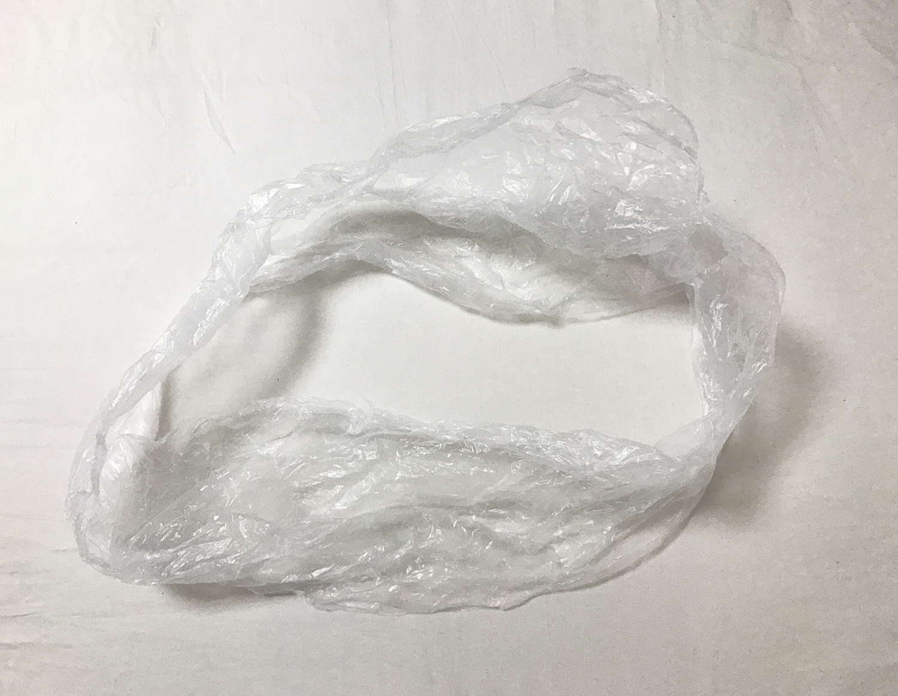

ポストの入り口より大きいな荷物を入れようと、必死で無理やり押し込んでいた時、後ろでおばあさんが「これ！これやで！」と何かがいっぱい入ったゴミ袋を私に向かって突きつけてきた。
私は状況を飲み込めず、え？どういうことですか？と聞くと、「これちぎり！まっすぐちぎり！」とビニール袋の口の部分をさらに突きつけてきて、ようやく、ビニールを使ったら滑りがよくなり押し込めるんじゃないかと提案してくれていることに気づいた。
私はありがたくビニール袋の口をちぎらせてもらい荷物に巻いた。おばあさんはもうどこかに歩いて行った。絶対無理だと諦めていた荷物は、入った。
私は急いで自転車に乗り、おばあさんを探した。おばあさんに向かって、「入りました！助かりました！」とお礼を言っていると、おばあさんは「いらんことしたなあ、ごめんやで」と言って笑っていた。 私も人の役に立てる人になりたいなど思っていたことを恥ずかしく思うほど、おばあさんの華麗さに圧倒された。憧れる。
私もいつかあんなふうに人と接したい。このことを忘れないでいたい。
